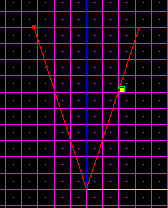
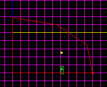
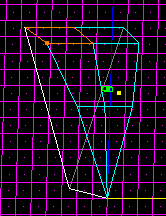
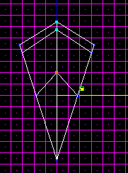
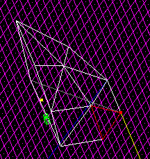
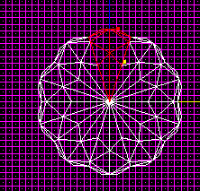
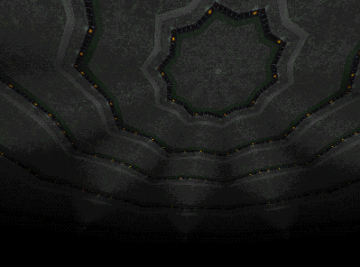

Before following this tutorial, be sure you can complete the Perfect Polygons and Pipes Tutorial.
First, you will follow the perfect polygons tutorial until you reach the state shown in the pic. I am making a ten-sided dome.
Now, switch to the side view and cleave it into a rough dome shape.

Multiselect the top surfaces and cleave them in half as shown.

Multiselect the vertexes you created and drag them away from the point as shown.

You've created some non-planar surfaces in doing that: cleave them in the pattern shown and it'll be fine.

Now's a good time to texture it. I also cleaved off a flat section so I can add a series of archways around the perimeter later.
Continue with the perfect polygons tutorial until you've created a complete dome, then adjoin all the sectors.
Voila! A ribbed dome!


Hard, wasn't it?